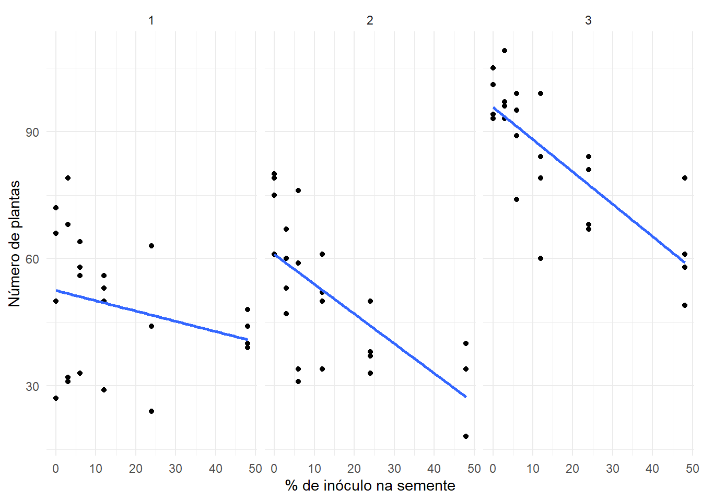
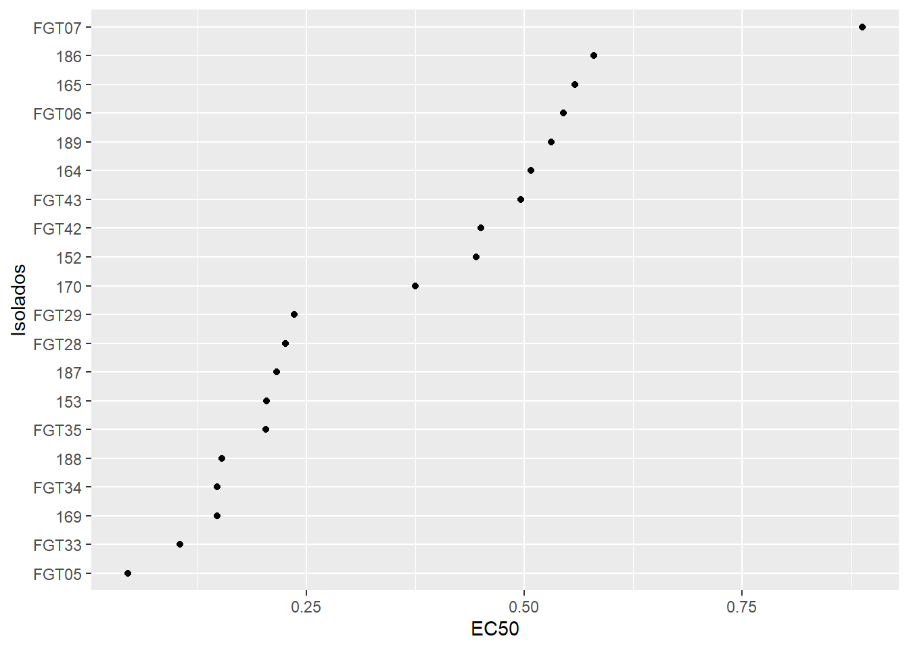

A análise de regressão visa modelar a relação entre uma variável dependente e uma ou mais variáveis independentes. No exemplo abaixo, a regressão linear é aplicada para entender como o tratamento de fungicida afeta o número de plantas emergidas.
library(readxl)library(gsheet)estande <-gsheet2tbl ("https://docs.google.com/spreadsheets/d/1bq2N19DcZdtax2fQW9OHSGMR0X2__Z9T/edit?gid=401662555#gid=401662555")# Visualizando a relação entre o tratamento e o número de plantas emergidaslibrary(ggplot2)estande |>ggplot(aes(trat, nplants)) +geom_point() +geom_smooth(method ="lm", se =FALSE) +facet_wrap(~ exp) +theme_minimal() +labs(x ="% de inóculo na semente", y ="Número de plantas")

Regressão Não-Linear
Quando a relação entre as variáveis não pode ser representada de forma linear, podemos usar modelos de regressão não-linear. Um exemplo comum é a regressão logística, usada quando os dados seguem uma curva sigmoide (como a germinação de sementes em função da dose de fungicida).
library(gsheet)library(ggplot2)library(dplyr)fungi <-gsheet2tbl("https://docs.google.com/spreadsheets/d/1bq2N19DcZdtax2fQW9OHSGMR0X2__Z9T/edit?gid=465348652#gid=465348652")# Agrupando os dados por código do fungo e dose e calculando a média de germinaçãofungi |>group_by(code, dose) |>summarise(germination =mean(germination)) |>ggplot(aes(dose, germination)) +geom_point() +# Adiciona os pontos de dispersãogeom_line() +# Adiciona linhas conectando os pontosfacet_wrap(~ code) # Cria gráficos separados para cada código de fungo
Ajustando o Modelo Não Linear
Utilizamos o pacote drc para ajustar dois tipos de modelos não lineares: W2.3 e LL.3. Esses modelos são usados para descrever a relação entre a dose do fungicida e a germinação.
# Filtrando os dados para o fungo FGT43FGT43 <- fungi |>group_by(code, dose) |>summarise(germination =mean(germination)) |>filter(code =="FGT43") # Filtra apenas o fungo "FGT43"# Instalando o pacote 'drc' para ajuste de modelos não lineareslibrary(drc)# Ajustando o modelo de regressão não linear (modelo W2.3)m43 <-drm(germination ~ dose, data = FGT43, fct =W2.3())# Ajustando o modelo LL.3 (modelo log-logístico)m43 <-drm(germination ~ dose, data = FGT43, fct =LL.3())
Avaliação do Modelo
Para avaliar a qualidade do modelo, utilizamos o AIC (Akaike Information Criterion), que nos indica o quão bem o modelo se ajusta aos dados. Quanto menor o valor do AIC, melhor o ajuste.
# Calculando o AIC para o modelo ajustadoAIC(m43) # Quanto menor o AIC, melhor o modelo ajustado
[1] 26.7762
# Plotando o gráfico do modelo ajustadoplot(m43)
Estimativa da EC50
A EC50 é a dose que resulta em 50% de germinação. Essa estimativa é útil para entender a eficiência do fungicida em diferentes concentrações.
Para analisar os diferentes isolados de fungos e determinar qual modelo de regressão não linear se ajusta melhor a cada um, utilizamos o pacote ec50estimator. Este pacote permite aplicar um modelo único para todos os isolados e estimar a EC50 de forma eficiente.
# Instalando o pacote 'ec50estimator'library(ec50estimator)# Estimando a EC50 para todos os isoladosdf_ec50 <-estimate_EC50(germination ~ dose,data = fungi,isolate_col ="code", # Coluna que contém os isoladosstrata_col ="state", # Coluna que contém os estados dos isoladosinterval ="delta", # Intervalo de confiança para a estimativafct = drc::LL.3()) # Modelo LL.3 (modelo log-logístico)
Visualização dos Resultados
Após a estimativa da EC50, visualizamos as estimativas para cada isolado e a distribuição das doses usando um gráfico.
# Visualizando as estimativas de EC50 para cada isoladodf_ec50 |>ggplot(aes(reorder(ID, Estimate), Estimate)) +# Reordena os isolados pelo valor estimado de EC50geom_point() +coord_flip() +# Reverte os eixos para facilitar a visualizaçãolabs(y ="EC50", x ="Isolados")

# Visualizando a distribuição das estimativas de EC50df_ec50 |>ggplot(aes(x = Estimate)) +geom_histogram(bins =5, color ="white")
Utilizando modelos não lineares, conseguimos ajustar os dados de germinação para diferentes doses de fungicidas e estimar a dose necessária para atingir 50% de germinação (EC50). O pacote drc permitiu o ajuste de modelos como o W2.3 e o LL.3, e o pacote ec50estimator facilitou a análise para diferentes isolados de fungos. Esse tipo de análise é essencial para a avaliação da eficácia de tratamentos em experimentos de dose-resposta.